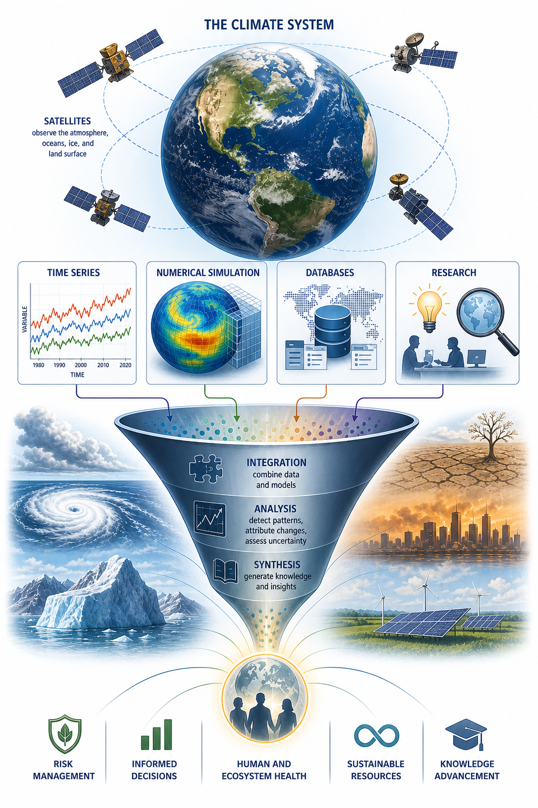
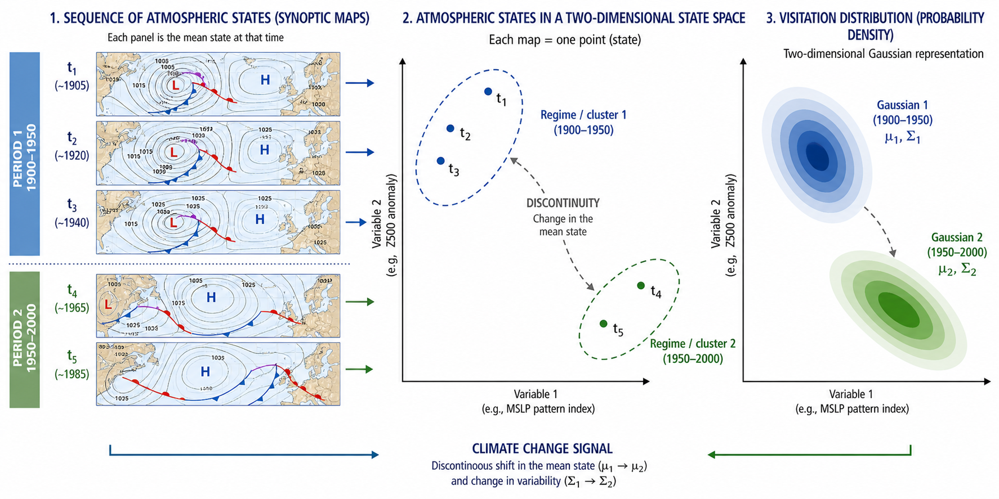
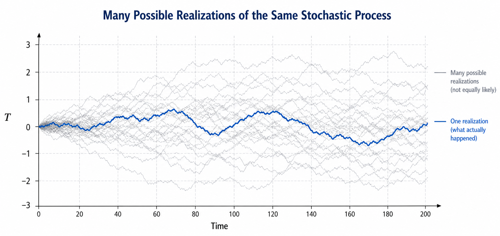
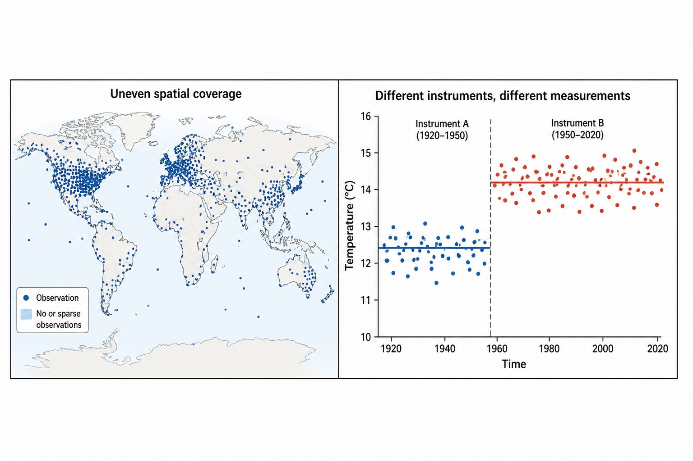

Chapter 12: Basic Facts of the Climate Sciences
What are the climate sciences?
The climate sciences study the physical, chemical, biological, and mathematical processes that determine the state and evolution of Earth’s climate system. They combine observations, theory, numerical modeling, and data analysis to understand how the atmosphere, ocean, cryosphere, land surface, and biosphere interact across a broad range of spatial and temporal scales.

Climate
Climate refers to the statistical description of weather over sufficiently long periods of time. It includes averages, variability, extremes, and recurrent patterns in quantities such as temperature, precipitation, wind, humidity, sea level, ocean circulation, and atmospheric composition.

Challenges in the Climate Sciences
Climate is not a laboratory system that can be repeated at will. Its study requires extracting structure from a single evolving planet, incomplete observations, interacting subsystems, and dynamics that span many scales.
One realization of the process
We observe only one historical trajectory of Earth’s climate system. Unlike a controlled experiment, the climate record cannot be restarted under identical conditions to generate independent repetitions.

Observational difficulties
Climate observations are uneven in space and time, affected by measurement errors, changes in instruments, data gaps, and limited historical coverage.

Subsystems with very different intrinsic dynamics
The atmosphere, ocean, cryosphere, biosphere, and land surface each possess their own characteristic mechanisms, memory, feedbacks, and preferred time scales.

Couplings between subsystems
Climate dynamics emerge from exchanges of momentum, heat, water, carbon, and energy among subsystems. These couplings generate feedbacks that can amplify, damp, or reorganize variability.

Many space-time scales, without a clean separation
Climate variability ranges from turbulent motions to planetary waves and from minutes to millennia. These scales often interact, making it difficult to isolate slow dynamics from fast fluctuations.

A Forced, Dissipative, and Chaotic System
The climate system is driven by external and internal forcings, dissipates energy through irreversible processes, and can display chaotic behavior. These three ideas provide a conceptual bridge between physical intuition, dynamical systems theory, and climate modeling.